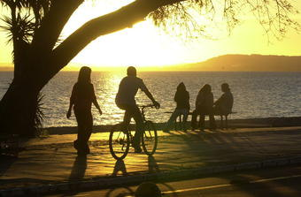
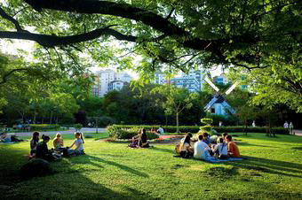

Ver o sol descer no horizonte é um dos programas mais românticos para se fazer a dois.
Se for em Porto Alegre e na orla de Ipanema, melhor ainda!
A capital dos gaúchos é conhecida por seu belíssimo pôr do sol, emoldurado pelas águas do lago Guaíba.
No Calçadão de Ipanema, é possível assistir a esse espetáculo da natureza bem juntinho com seu amor.

Estações de bike números [27] e [29] no bairro Moinhos de Vento.
Em um sábado de sol, o Parcão é uma ótima alternativa de passeio para os namorados. Por lá, você pode curtir seu amor nos banquinhos ou nos largos gramados, que também são um palco perfeito para pequeniques ou um chimarrão a dois. Os locais próximos ao lago, que fica na área central do parque, são os mais disputados. É possível esticar o passeio no Moinhos Shopping ou nos restaurantes, bares e cafés da região. Entre eles, estão a pizzaria Bazkaria, a Companhia do Temaki, o Cult Pub e o quiosque do Saúde no Copo.
